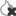

Everything you do on the Internet from Tails goes through the Tor network.
Tor encrypts and anonymizes your connection by passing it through 3 relays. Tor relays are servers operated by different people and organizations around the world.

You cannot access the Internet from Tails until you are connected to Tor. For example, Tor Browser displays the error message Proxy server refusing connections until you are connected to Tor.
Because Tor routes your Internet traffic through 3 relays before reaching its destination, the connection is slower than when your are not using Tor.
See our documentation on why Tor is slow.
To connect to the Tor network:
Connect to a local network, wired, Wi-Fi, or mobile.
The Tor Connection assistant appears to help you connect to the Tor network.

Choose whether you want to:
Connect to Tor automatically
Hide to your local network that you are connecting to Tor
The implications of both methods are detailed below.
Tor relays and bridges
Public Tor relays
Most of the time, your local network does not block access to the Tor network and you can use a public relay as your first Tor relay.
Using a public Tor relay as your first Tor relay makes it clear to your local network that you are connecting to Tor, while still keeping your online activity secure and anonymous.
Tor bridges
Tor bridges are secret Tor relays that keep your connection to the Tor network hidden.
Use a bridge as your first Tor relay if connecting to Tor is blocked or if using Tor could look suspicious to someone who monitors your Internet connection.
The technology used by Tor bridges is designed to circumvent censorship where connections to Tor are blocked, for example in some countries with heavy censorship, by some public networks, or by some parental controls.
It does so by camouflaging your connection so it cannot be recognized as a connection to Tor. As a consequence, the same technology can be used to hide that you are using Tor if it could look suspicious to someone who monitors your Internet connection.
Tor bridges are often less reliable and slower than public Tor relays.
Connecting to Tor automatically
We recommend connecting to Tor automatically if you are on a public Wi-Fi network or if many people in your country use Tor to circumvent censorship.
When you choose this option, Tails tries different ways of connecting to Tor until it succeeds:
Tails tries to connect to Tor directly using public relays, without using bridges.
Tails tries to connect to Tor using one of the default bridges, already included in Tails, if connecting using public relays fails.
Tails asks you to configure a custom bridge, if connecting using the default bridges fails.
Someone monitoring your Internet connection could identify these attempts as coming from a Tails user.
If connecting to Tor automatically fails, the Tor Connection assistant helps you:
- Sign in to the network using a captive portal
- Configure a local proxy
In the future, Tails will also automatically:
- Detect if you have to sign in to the local network using a captive portal (#5785)
Hiding to your local network that you are connecting to Tor
You might need to go unnoticed if using Tor could look suspicious to someone who monitors your Internet connection.
When you choose this option, Tails will only connect to Tor after you configure a Tor bridge. Bridges are secret Tor relays that hide that you are connecting to Tor.
It is impossible to hide to the websites that you visit that you are using Tor, because the list of exit nodes of the Tor network is public.
Our team is doing its best to help you connect to Tor using the most discrete types of Tor bridges. That is why, when you decide to hide that you are connecting to Tor:
Default bridges are not available.
You will have to know the address of a custom bridge.
To request custom bridges, you can either:
Request bridges on https://bridges.torproject.org/.
We recommend doing so before starting Tails and ideally from a different local network than the one on which you want to hide that you are using Tor.
Send an empty email to bridges@torproject.org from a Gmail or Riseup email address.
Sending such an email, from your phone for example, does not reveal to your local network that you are trying to connect to Tor.
You can only use the types of bridges that our team considers discrete enough.
Currently in Tails, only obfs4 bridges hide that you are using Tor.
To save the last Tor bridge that connected to Tor successfully, turn on the Tor Bridge feature of the Persistent Storage.
In the future, we will make it easier to use custom bridges by:
- Allowing you to scan the QR code returned by bridges@torproject.org (#18219)
- Allowing you to request bridges from Tails by solving a CAPTCHA (#15331)
Troubleshooting Tor bridges
If connecting to Tor using a custom bridge fails, the Tor Connection assistant helps you:
- Set the clock of your computer to the correct time zone
- Sign in to the network using a captive portal
- Configure a local proxy
- Enter a different bridge
The computer clock is set to an incorrect time zone
For Tor bridges to work, the clock of your computer must be correct.
Choose Fix Clock in the error screen of the Tor Connection assistant to set the time zone and time of your computer.
You did not enter the bridge correctly
An obfs4 bridge looks like:
obfs4 1.2.3.4:1234 B0E566C9031657EA7ED3FC9D248E8AC4F37635A4 cert=OYWq67L7MDApdJCctUAF7rX8LHvMxvIBPHOoAp0+YXzlQdsxhw6EapaMNwbbGICkpY8CPQ iat-mode=0
You need to enter the entire line, not just the IP address and port combination.
The bridge is no longer operational
It is possible that the bridge that you entered is no longer working.
Try entering another bridge or requesting other bridges.
Viewing the status of Tor
The status of Tor appears as an onion icon in the notification area:

You are connected to Tor.
 You are not connected to Tor.